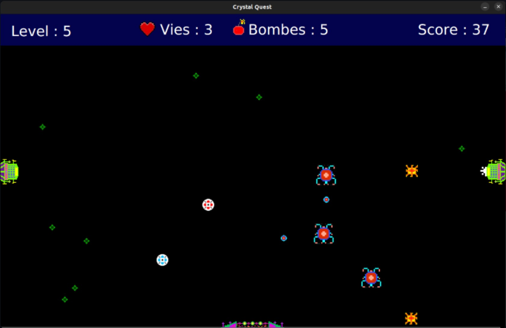

Visuel à ajouter · crystal-quest.jpg

Projet d’équipe · 4 personnes · 4 mois
Recréer un classique en pixel art
Description : Un jeu en JavaFX inspiré de Crystal Quest, jeu rétro de 1987.
- Mon rôle : Développement du passage de niveau et de l’interface ; création d’assets en pixel art inspirés du jeu original ; ajout du multijoueur et de la sélection de couleur des joueurs et des portes.
- Technologies : JavaFX, Git.